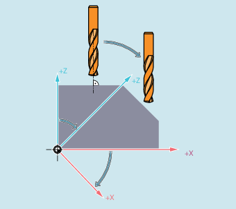
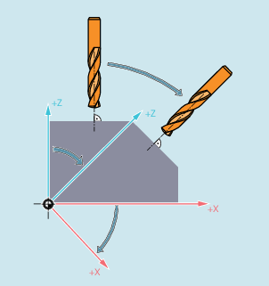

Enabling
Tool radius compensation for contour tools is enabled on a channel-specific basis using:
MD28290 $MC_MM_SHAPED_TOOLS_ENABLE
Tool type
Contour tool types are defined on a channel-specific basis using:
MD20370 $MC_SHAPED_TOOL_TYPE_NO
Cutting edge
A number of cutting edges (D numbers) can be assigned to each contour tool in any sequence. The maximum number of cutting edges per tool is parameterized using:
MD18106 $MN_MM_MAX_CUTTING_EDGE_PERTOOL
The first cutting edge of a contour tool is the cutting edge, which is selected when activating the tool. If, e.g. in a program, using the commands T3 D5, the fifth cutting edge (D5) of the third tool (T3) is activated, then D5 and the following cutting edges define with one part, or altogether, the contour tool. The cutting edges located before D5 are ignored.
If a frame that contains a rotation is programmed, then for CUT2D or CUT2DD, the plane in which the tool radius compensation (compensation plane) takes place is not rotated at the same time. The tool radius compensation is taken into account, referred to the non rotated machining plane (G17, G18, G19). The tool length compensation acts relative to the compensation plane.
For machining inclined surfaces, the tool offsets must be appropriately defined or calculated based on the functions for "Tool length compensation for tools that can be orientated".
If a frame that contains a rotation is programmed, then for CUT2DF or CUT2DFD, the plane in which the tool radius compensation takes place (compensation plane) is also rotated. The tool radius compensation is taken into account, referred to the rotated machining plane (G17, G18, G19). However, the tool length compensation still acts relative to the non-rotated machining plane.
Requirement: At the machine, the tool orientation must be able to be adjusted perpendicular to the rotated machining plane, and set for machining.
| Note |
The tool length compensation continues to be active relative to the non-rotated working plane. |
The approach/retract response when tool radius compensation is active for the cases where the activation and/or deactivation block does not contain any traversing information (only for 2½ D tool radius compensation with CUT2D or CUT2DF) is defined using the setting data:
SD42494 $SC_CUTCOM_ACT_DEACT_CTRL
The following decimal coding applies:
Thousands position (103) | Hundreds position (102) | Tens position (101) | Units position (100) |
|---|---|---|---|
Retraction response | Retraction response | Approach response | Approach response |
1) Tools with cutting edge position are tools with tool numbers between 400 and 599 (turning and grinding tools), whose cutting edge position has a value that lies between 1 and 8. Turning and grinding tools with cutting edge position 0 or 9 or other, undefined values, are treated in the same way as milling tools. | |||
If the relevant position has a 1, then approach and retraction are performed, even if only G41/G42 or G40 are present in the block.
Example:
| N100 X10 Y0 | |
| N110 G41 | |
| N120 X20 |
If a tool radius of 10 mm is assumed in the example, then position X10 Y10 is approached in block N110.
If the relevant position has a 2, approach and retraction are only performed if at least one geometry axis is programmed in the activation/deactivation block. If the same result as in the example is to be achieved with this setting, then the program must be changed as follows, for example:
| N100 X10 Y0 | |
| N110 G41 X10 | |
| N120 X20 |
If axis data X10 is not included in block N110, then activation of the tool radius compensation is delayed by one block, i.e. the activation block would then be block N120.
If the relevant position has a 3, then retraction is not performed in a deactivation block (G40) if only the geometry axis is programmed perpendicular with respect to the compensation plane. In this case, initially the axis moves perpendicular with respect to the compensation plane. The axis then retracts in the compensation plane. In this case, after G40, the block must contain motion information in the compensation plane. Approach movements for values 2 and 3 are identical.
If the relevant position has a 4 (only in the case of a tool without cutting edge position when retracting, i.e. the thousands digit), then for a deactivation block, the next programmed movement is performed if no motion was programmed in it.
Example:
| N1040 G41 T1 D1 | |
| N1050 X20 | |
| N1060 X30 | |
| N1070 X50 | ; Offset active |
| N1080 UP | |
| N1090 X70 F10000 | ; Traverse offset with F10000 |
| N1100 G01 | |
| N1110 G90 | |
| N1120 X90 F12000 | |
| N1130 X100 | |
| N1140 M30 |
| N2000 PROC UP | |
| N2010 G40 | |
| N2030 RET |
If the relevant position has a number other than 1, 2 or 3, i.e. especially a value of 0, then in a block that does not include any traversing information, approach and retraction are not performed.
| Note |
Tools with cutting edge positionIf the value of this setting data is changed in a program, it is recommended that a preprocessing stop (STOPRE) is programmed before writing, as otherwise there is a risk that the new value will be used in upstream parts of the program. The inverse case is not critical. This means that if the setting data is written to, subsequent NC blocks will definitely access the changed value. |